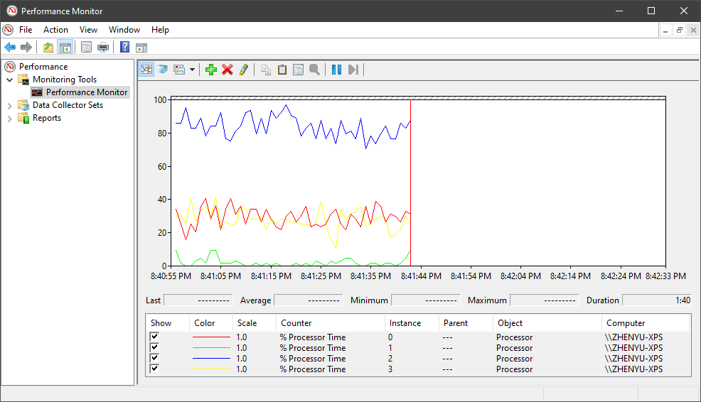
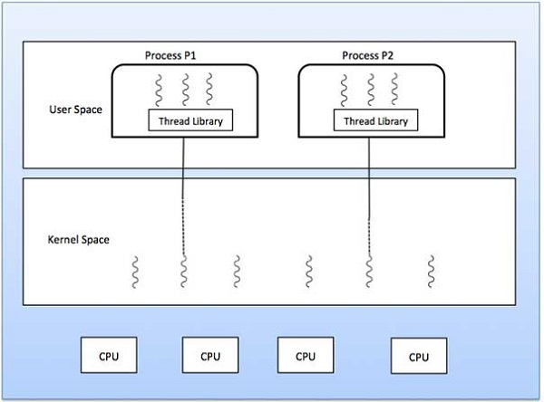
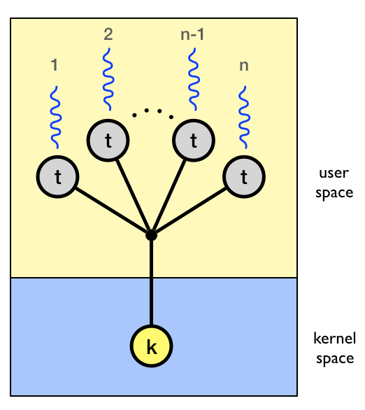
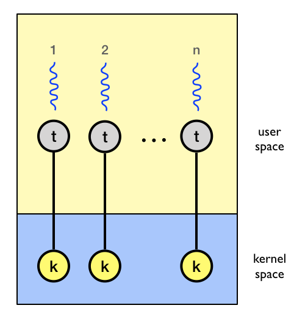
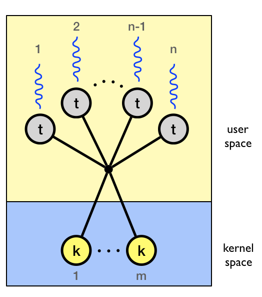
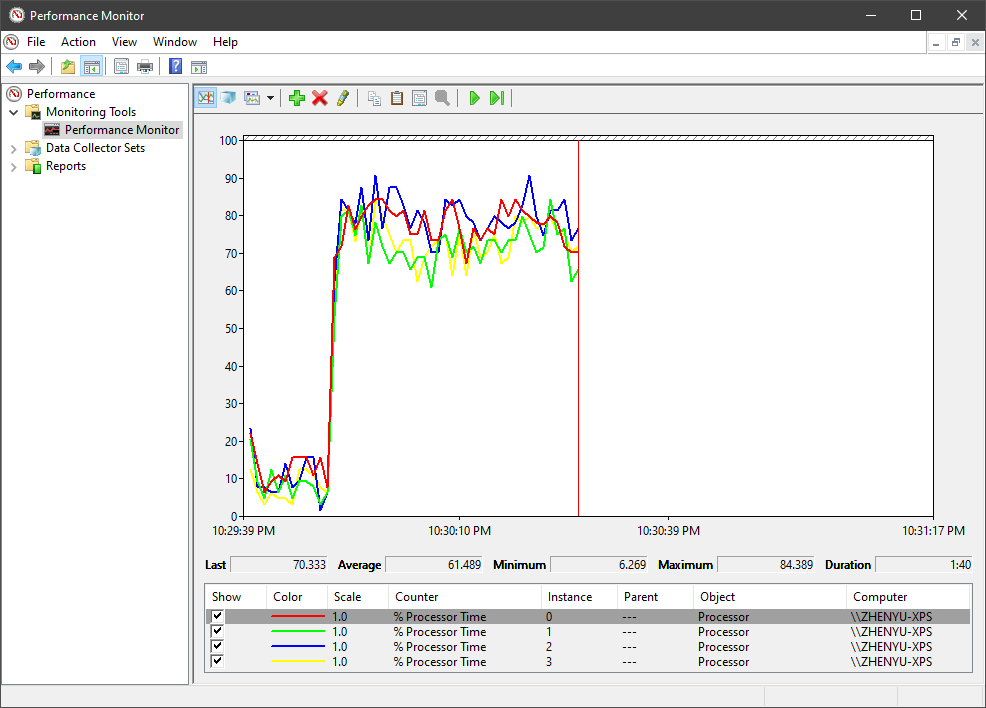

原文连接:https://www.cnblogs.com/CoderAyu/p/12014480.html
不一样的角度一窥多线程
最近在性能调试时,发现了一个有趣的现象,我把代码简化后如下.
class Program
{
static void Main(string[] args)
{
Console.WriteLine("Start...");
DoSomething();
Console.WriteLine("Ending...");
Console.ReadLine();
}
static void DoSomething()
{
var sum="";
for (int i = 2; i < int.MaxValue; i++)
{
sum += "s";
}
Console.WriteLine(sum.Length);
}
}可以看到,非常简单的一段代码,当我用Windows的性能监测工具来监测每个处理器的使用率时,发现了一个有趣的现象.

我电脑是四核的I7处理器,执行以上代码后,却只有处理器2一直处理一个比较高的占用率,而其他的三个则处于一个"摸鱼混日子"的状态,处理器1则更过分,你是睡着了吗?
同一台电脑上的处理器,难道大家不是有福同享,有难同当的吗? 为什么其他几个处理器就忍心看着处理器2水深火热呢?
然后,我就和这个问题死磕上了,恶补了一些操作系统与多线程的知识,现在把一写知识点串起来,分享给大家.
分级保护域
电脑操作系统提供不同的资源访问级别。在计算机体系结构中，Rings是由两个或更多的特权态组成。在一些硬件或者微代码级别上提供不同特权态模式的CPU架构上，保护环通常都是硬件强制的。Rings是从最高特权级（通常被叫作0级）到最低特权级（通常对应最大的数字）排列的。在大多数操作系统中，Ring 0拥有最高特权，并且可以和最多的硬件直接交互（比如CPU，内存）。在Windows中, User Space,也就是我们自己安装的那些应用程序处理Ring 3,而系统内核就在Ring 0.

对于这个问题,举个例子,大家就好理解了.
钱不是万能的,但没钱是万万不能的,所以钱是一个家庭的重中之重,家里老婆呢为了这个家的长治久安,掌握家里的财政大权,把家里的小金库守得死死的,但这就意味着我没钱花了吗?当然不是,和老婆大人用正当理由申请不就完事了?😂
申请通过之后,老婆大人是允许我直接伸手去家里小金库拿钱吗? 那当然不是,如果我一抓一大把就危险了,所以还得经过她的手从小金库拿钱给我.
这个现象,我觉得也是一种分级保护域,所以呢,也一直对老婆大人的这种万恶行径表示理解.
操作系统也是这样,CPU,内存这些硬件是电脑安全的根本,所以不能给第三方软件操作权限,想操作硬件,就通过由Ring 0中内核(Kernel)暴露的严格Api进行.
用户级线程与内核级线程
线程主要有以下两种实现方式-
- 用户级线程 -用户托管线程。
- 内核级线程 -作用在内核（操作系统核心）上的操作系统管理的线程。

在上图中,User Space就可以理解为我上个章节中的Ring 3,而Kernel Space就是Ring 0, 在Ring 0中,是可以直接操作CPU,内存等硬件的,而Ring 3不行.
以下是用户级线程与内核级线程的对比.
| 用户级线程 | 内核级线程 |
|---|---|
| 用户线程由用户实现。 | 内核线程由OS实现。 |
| 操作系统无法识别用户级线程。 | 内核线程被操作系统识别。 |
| 用户线程的实现很容易。 | 内核线程的实现很复杂。 |
| 上下文切换时间更少。 | 上下文切换时间更长。 |
| 上下文切换不需要硬件支持。 | 需要硬件支持。 |
| 如果一个用户级别的线程执行阻止操作，则整个过程将被阻止。 | 如果一个内核线程执行阻止操作，则另一线程可以继续执行。 |
| 无法直接发挥多核处理器的优势 | 可以享受多处理起带来的好处 |
其中,非常重要的一点,用户级线程无法直接发挥多核处理器的优势,难道我们编写出来的代码只能在一个处理器上运行了吗?这就要讲讲用户级线程模型.
用户级线程模型
通常，内核级线程可以使用三个模型之一来执行用户级线程。
- Many-to-one
- One-to-one
- Many-to-many
所有模型都将用户级线程映射到内核级线程,一个内核线程就像一个处理器,它是系统编排任务的基本单位。
Many-to-one
多对一模型将许多用户级线程映射到一个内核级线程。线程管理是通过线程库在用户空间中完成的。当线程进行阻塞的系统调用时，整个过程将被阻塞。一次只能有一个线程访问内核，因此多个线程无法在多处理器上并行运行。
如果用户级线程库是以操作系统不支持的方式实现的，则内核线程将使用多对一关系模型。

内核对用户级线程不可见,在它眼里只有内核线程,而在内核线程的眼里,一个进程无非就是一个偶尔被被它翻牌的黑盒子,进程负责用户线程的调度与执行.
One-to-one
在这种模型下用户级线程与内核级线程之间存在一对一的关系。该模型比多对一模型并发性好,当一个线程进行阻塞系统调用时，它还允许另一个线程运行,所以它支持多个线程以在处理器上并行执行。
该模型的缺点是创建用户线程需要相应的内核线程,而创建内核线程开销是很大的.

Many-to-many
在多对多模型中，m个内核线程处理n个用户线程,其中m < n. 该模型并发性最好,并且不用创建过多的内核线程,涉及到的线程切换同步的开销也更小.

真相浮出水面
.Net的代码作为托管代码在“托管线程”上执行，而托管线程是在CLR虚拟机上执行的虚拟线程,也是属于用户级线程.
正如JIT编译器将“虚拟” IL指令映射到在物理计算机上执行的本机指令一样，CLR的线程基础结构也将“虚拟”托管线程映射到操作系统提供的内核线程。
说到这里,我们也差不多有了前面我说的那个现象的答案了,并非其他处理器不想与那个水深火热的处理器有难同享,而是我没有使用多线程,所以执行的程序只有一个主线程,也就是说用户线程数为1.只能是one to one 模型,所以只有一个处理器能参与工作.
既然知道了里面的原理,那我们就对前文中的程序进行改造,创建四个线程来执行任务,会不会所有处理器都忙起来呢?
class Program
{
static void Main(string[] args)
{
Console.WriteLine("Start...");
for (var i = 0; i < 4; i++)
{
var td=new Thread(DoSomething);
td.Start();
}
Console.WriteLine("Ending...");
Console.ReadLine();
}
static void DoSomething()
{
var sum="";
for (int i = 2; i < int.MaxValue; i++)
{
sum += "s";
}
Console.WriteLine(sum.Length);
}
}可以看到,这次大家的步伐都做到了惊人的一致,四个处理器都被调用起来,加上主线程,这里至少有五个用户线程,所以这里应该是many to many的模型了.

谢谢观赏!
参考资料:
https://en.wikipedia.org/wiki/Protection_ring
https://stackoverflow.com/questions/15093510/whats-c-sharp-threading-type
https://github.com/dotnet/coreclr/blob/master/Documentation/botr/threading.md#clr-threading-overview